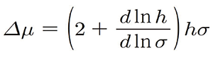
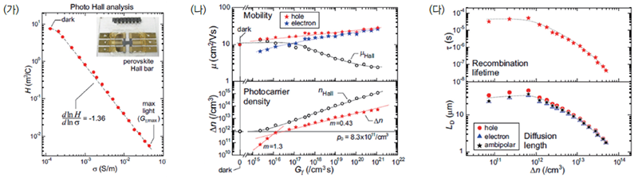

주제별 연구성과
주제별 연구성과
KAIST RESEARCH ACHIEVEMENTS
포토 홀 효과
신소재공학과 신병하
요약
홀 효과는 지난 100년이 넘는 시간 동안 가장 일반적인 반도체 특성 분석 기법의 하나며 전 세계의 반도체 연구 기관에서 보편적으로 사용되고 있다. 그러나 현재까지의 분석 기법으로는 홀 효과를 통해 다수 운반체(Majority carrier)와 관련한 특성만 파악할 수 있고, 태양 전지와 같은 소자의 구동 원리 파악에 필수인 소수 운반체 (Minority carrier) 정보는 얻을 수 없다는 한계를 가지고 있었다. 본 연구에서는 "Carrier-Resolved Photo-Hall" (CRPH) (포토 홀) 기술을 개발했다. 기존 홀 측정에서는 세 가지 정보를 얻을 수 있었다면 연구팀의 새로운 기술은 실제 작동 조건을 포함한 여러 광도에서 광여기 전하의 농도, 다수 운반체 및 소수 운반체의 전하 이동도, 재결합 수명, 확산 거리 등 최대 일곱 개의 중요한 정보를 얻을 수 있다. 연구팀의 이 기술은 태양 전지, 발광 다이오드와 같은 광전자 소자 분야에서 사용 가능한 신소재 개발 및 최적화에 핵심적인 역할을 할 것으로 기대된다.
연구배경
최근 차세대 에너지원에 대한 중요성이 부각되면서 태양전지에 대한 연구가 활발하게 이루어지고 있는 추세이다. 차세대 태양전지로 각광 받고있는 대표적인 물질 중 하나인 페로브스카이트 태양전지는 근래 광전변환효율의 급격한 증가로 인해 실리콘 태양전지와 대등한 효율을 보이고 있다. 하지만 이를 넘어선 초 고효율을 가지는 태양전지 제작을 위해서는 해결해야 할 다음과 같은 근본적이 문제들이 있다: 광원에 노출된 상황 하에서 태양전지 재료의 성능은 소수 캐리어 정보와 관련된 물리적 특성에 크게 의존하지만, 현재까지 태양전지가 구동되는 광원 조건에서 해당 특성을 분석할 수 있는 기술은 존재하지 않는다. 현재 해당 정보를 얻기 위해서는 하나의 분석 기법인 아닌 여러 가지 분석 장비를 이용하여 계산해 내는 방식을 사용하고 있기 때문에, 그 결과 값 의 신뢰도가 매우 떨어지며 실제 태양전지 구동환경에서의 소자 특성은 파악하기 어렵다는 한계를 가지고 있다.
따라서, 태양전지 소자 구동에 큰 영향을 끼치는 물성들의 정보를 한 가지 분석기법을 사용하여 모두 얻을 수 있는 분석 시스템을 구축하는 것이 필수적이며, 학계에서 가장 먼저 해결해야 할 문제점으로 인식하고 있는 상황이다.
연구내용
현재까지의 고전적인 홀 측정 방식은 다수 캐리어에 대한 정보만 얻을 수 있는 분석기법이며 3가지 정보만을 획득할 수 있다. 캐리어의 유형, 전하농도 및 모빌리티이다. 하지만 실제로 광원에 노출될 경우 두 캐리어(전자, 정공) 모두 전도도 (σ) 및 홀 계수의 (h ) 변화에 기여하게 된다. 광원의 세기 변화에 따른 전기전도도 및 홀 계수 측정을 통해 본 연구 그룹은 전자와 정공 각각의 모빌리티, 홀 계수 및 전기전도도를 모두 획득할 수 있는 지금까지 알려지지 않은 획기적인 관계식을 유도하였다:

이 방정식을 통해 주어진 광원 조건 하에서 포토-홀 방정식을 통해 광전지 재료에서 원하는 파라미터를 추출할 수 있게 되었다. 이 논문에 보고된 바와 같이 기존 홀 측정에서 얻을 수 있는 세 가지 매개 변수와 달리 이 새로운 기술은 실제 작동 조건을 포함한 여러 광원 세기에서 다수 및 소수 이동도 및 캐리어 농도, 재결합 수명, 캐리어 확산 길이 등 최대 7개의 매개 변수를 획득할 수 있다. (그림 2 참조). 세계 최고 수준의 광전변환효율을 가진 페로브스카이트 및 Cu2ZnSn(S,Se)4(CZTSe) 태양전지 박막을 CRPH 기술을 통해 심도 있는 분석을 진행하여 해당 기술의 신뢰성을 획득하였다.
 그림 1. Carrier-Resolved Photo-Hall 기술 개념도
그림 1. Carrier-Resolved Photo-Hall 기술 개념도

그림 2. 유-무기 하이브리드 페로브스카이트 박막 포토-홀 측정 분석 및 결과
(가) σ-h 관계식 inset: 포토-홀 분석용 페로브스카이트 박막 사진
(나) 다수 및 소수 이동도 및 캐리어 농도 대 흡수된 광자 농도 Gγ
(다) 캐리어 농도에 매핑 된 재결합 수명 및 소수 캐리어 확산 길이
기대효과
홀 효과는 캐리어에 대한 가장 기초적인 정보를 제공하기 때문에 전자 재료 연구에서 가장 중요한 측정 기술이라고 할 수 있다. 또한, 지난 수십 년 동안, 이 효과는 양자 홀 효과와 같은 물리학의 근본적인 발전의 기초가 되었다. 포토 홀 방정식의 발견으로, 다수 및 소수 캐리어의 모든 관련 매개 변수를 추출할 수 있는 기술이 있으며 홀 효과의 기능을 크게 확장시켰다. 기술은 태양 전지 또는 반도체 소자 분야에서 사용 가능한 신소재 개발 및 최적화에 핵심적인 기여를 할 것으로 보이며, 140년의 홀 효과 역사에 새로운 패러다임을 제시하였다.
연구성과
[논문] O. Gunawan*, S. R. Pae, D. M. Bishop, Y. Virgus, J. H. Noh, N. J. Jeon, Y. S. Lee, X. Shao, T. Todorov, D. B. Mitzi, B. Shin*, "Carrier-resolved photo-Hall effect", Nature 575, 151 (2019) [2018 Impact Factor = 41.577]
[홍보] 해외 언론보도 10여 회
연구비지원
한국연구재단, 기후변화대응기술개발사업
한국에너지기술평가원, 에너지기술개발사업